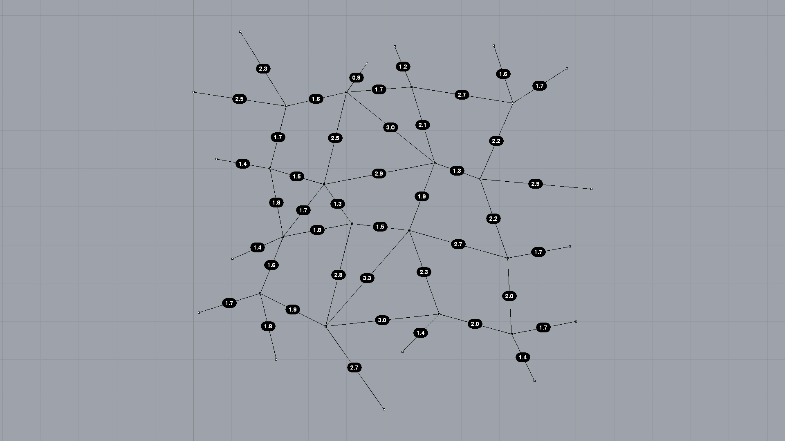

Matlab sessions from Rhino

Downloads
Important
The Matlab client for Rhino uses the .NET infrastructure available through IronPython. It therefore also only works in Rhino (or in any other environment based on the .NET ecosystem).
"""Interface 02: Matlab from Rhino
- create Matlab client object
- connect to a running automation server or start a new one
- make a network from line geometry
- extract network vertex coordinates and connectivity matrix
- convert to Matlab matrices
- compute coordinate differences in Matlab
- compute edge lengths in Matlab
- plot results as edge labels
.. note::
Connect to a running automation server if possible, because starting
one from scratch can take some time.
Currently the client does not provide a method to do this explicitly.
However, once an automation server is started by the client, the service
lease has a sufficiently long lifetime to connect to it again in the future.
Event if the server was started by a previous process.
"""
from __future__ import print_function
import compas_rhino
from compas.datastructures import Network
from compas.com import MatlabClient
__author__ = 'Tom Van Mele'
__email__ = 'van.mele@arch.ethz.ch'
# connect to the MATLAB COM automation server
matlab = MatlabClient()
# make a network from line geometry
guids = compas_rhino.select_lines()
lines = compas_rhino.get_line_coordinates(guids)
network = Network.from_lines(lines)
# vertex coordinates
xyz = network.get_vertices_attributes('xyz')
xyz = matlab.matrix_from_list(xyz)
# connectivity matrix
m, n = network.number_of_edges(), network.number_of_vertices()
key_index = network.key_index()
C = [[0] * n for _ in range(m)]
for i, (u, v) in enumerate(network.edges()):
j, k = key_index[u], key_index[v]
C[i][j] = -1
C[i][k] = +1
C = matlab.matrix_from_list(C)
# put the matrices in the MATLAB workspace
matlab.put('xyz', xyz)
matlab.put('C', C)
# compute coordinate differences
# compute edge lengths
matlab.eval('uv = C * xyz;')
matlab.eval('l = sqrt(sum(uv .^ 2, 2));')
# get the result back
l = matlab.get('l')
# visualise lenghts as edge labels
compas_rhino.network_draw_edge_labels(
network,
text={(u, v): '{:.1f}'.format(l[i][0]) for i, (u, v) in enumerate(network.edges())}
)